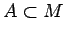
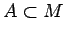

Inhalt Index DeskTop Bronstein

 Dynamische Systeme und Chaos Gewöhnliche Differentialgleichungen und Abbildungen Dynamische Systeme Grundbegriffe
Dynamische Systeme und Chaos Gewöhnliche Differentialgleichungen und Abbildungen Dynamische Systeme Grundbegriffe


Das invertierbare dynamische System  auf
auf  heißt volumenschrumpfend oder dissipativ bzw. volumenerhaltend oder konservativ, wenn für jede Menge  mit einem positiven n-dimensionalen Volumen vol(A) und jedes die Beziehung vol( vol(A) bzw. volvol(A) gilt.
heißt volumenschrumpfend oder dissipativ bzw. volumenerhaltend oder konservativ, wenn für jede Menge  mit einem positiven n-dimensionalen Volumen vol(A) und jedes die Beziehung vol( vol(A) bzw. volvol(A) gilt.
| Beispiel A |
|
Sei |
| Beispiel B |
|
Für das System (17.6) ist und damit . Also ist (17.6) dissipativ, falls , und konservativ, falls . |